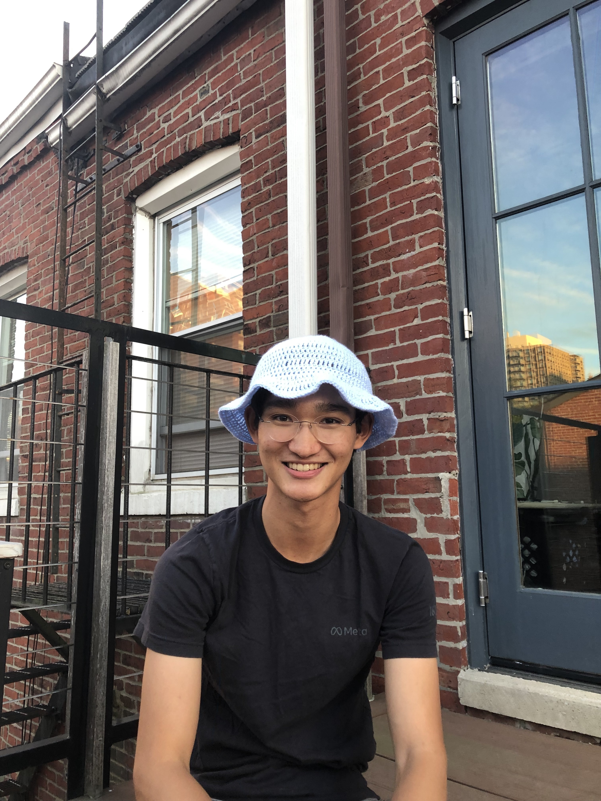
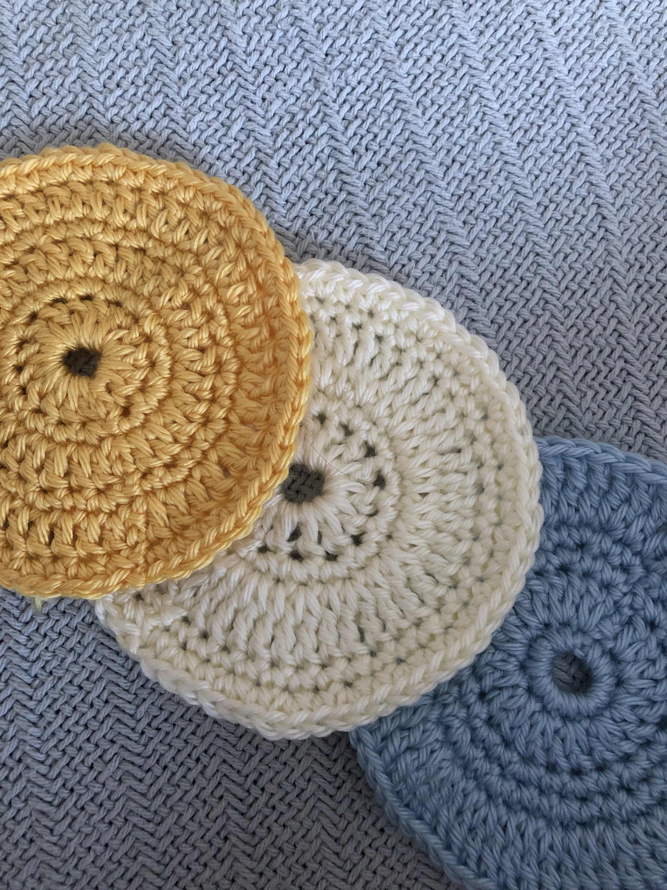
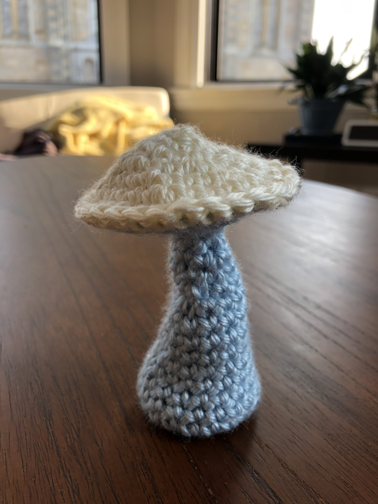

Reb Crochets
Crochet is a fun creative outlet because it's so free-form. I'm pretty new to it, but here are some of the things I can make!
How does it work?
It is essentially making loops into loops. The only instrument needed is a hook needle, which lets you pull the yarn through loops. I like to crochet in the round, which is where each row is a circle instead of straight. You make more or fewer loops into the previous row to expand or contract the shape of whatever you're making. The learning curve is really quick, so if you're thinking about starting, you totally should!
My crochet cookbook includes:
- bucket hats
- coasters
- round balls
- mushrooms


